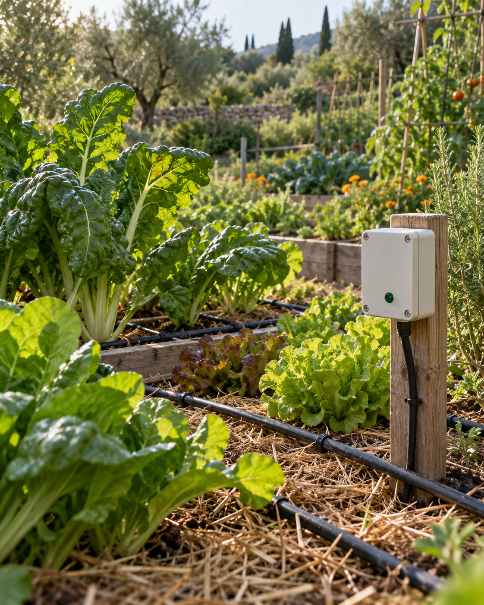

Agua y cultivos
Automatización de riegos, medición de depósitos y aljibes y control de las condiciones de huertos e invernaderos.
Ver solucionesDiseñamos e instalamos soluciones accesibles y adaptadas para gestionar el agua, el riego, la energía, la climatización y mucho mas. Sistemas útiles que automatizan tareas sin renunciar al control manual.
Tecnología al servicio de las personas y del entorno.

Aplicamos la domótica para resolver necesidades reales en fincas, viviendas, huertos, invernaderos y otros espacios. Diseñamos cada sistema según el lugar, sus recursos y las personas que van a utilizarlo.
Automatización de riegos, medición de depósitos y aljibes y control de las condiciones de huertos e invernaderos.
Ver solucionesMonitorización de consumos y producción eléctrica, control de calefacción y gestión eficiente de la climatización.
Ver solucionesSensores, cámaras y alertas para conocer el estado de la instalación y detectar incidencias a tiempo.
Ver solucionesEstudiamos la necesidad, seleccionamos los componentes, instalamos y configuramos el sistema y enseñamos al cliente a utilizarlo.
Ver solucionesEn PERMATICA utilizamos la tecnología como una herramienta al servicio de las personas y del entorno. Buscamos soluciones proporcionadas, asequibles y fáciles de comprender.
Trabajamos con tecnologías abiertas y compartimos proyectos que pueden estudiarse, adaptarse y construirse.
Diseñamos sistemas que facilitan las tareas cotidianas y mantienen opciones de funcionamiento manual cuando son necesarias.
Adaptamos el diseño a las características de cada finca, vivienda o proyecto, en lugar de ofrecer instalaciones idénticas.
Ayudamos a utilizar mejor el agua y la energía. Explicamos el funcionamiento para que puedas manejar tu instalación con seguridad.
Conoce el agua disponible en aljibes y depósitos y observa su evolución.
02Programación por zonas y control manual adaptados a cada cultivo.
03Temperaturas, calderas, depósitos de inercia y circuitos coordinados.
04Comprende la producción y el consumo para aprovechar mejor la energía.
05Automatización según la temperatura, con control directo del usuario.
Creemos que la tecnología también puede compartirse. Nuestro primer ejemplo es el aforador de aljibe: un sistema para conocer el agua almacenada y seguir su evolución.
Ver el proyecto del aforadorLa documentación descargable está en preparación.
Explícanos qué quieres controlar, automatizar o mejorar mediante el formulario.
Analizamos el espacio, el funcionamiento actual y los recursos disponibles.
Diseñamos una solución adaptada y presentamos un presupuesto personalizado.
Seleccionamos los componentes, realizamos el montaje y dejamos el sistema funcionando.
Explicamos el funcionamiento y el control manual para que puedas manejar la instalación.
PERMATICA es un proyecto colectivo de Permacultura Aragón que une permacultura, domótica y tecnología open source.
No se trata de añadir tecnología porque sí, sino de utilizarla de forma proporcionada para ahorrar recursos, facilitar tareas y mejorar el funcionamiento de cada espacio.
Conoce PERMATICACada finca, vivienda y proyecto parte de una situación diferente. Explícanos qué quieres controlar, medir o automatizar y estudiaremos una solución adaptada.